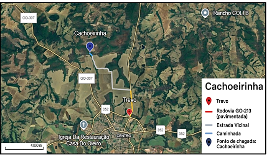
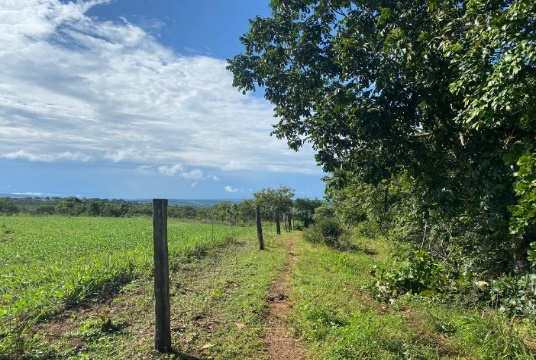
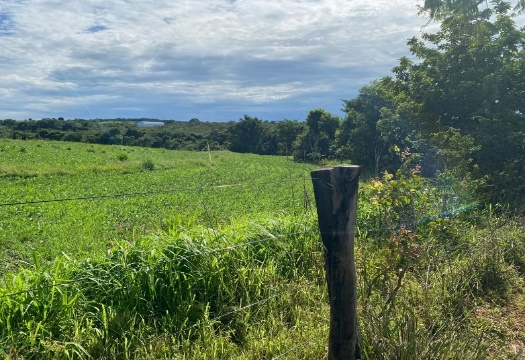
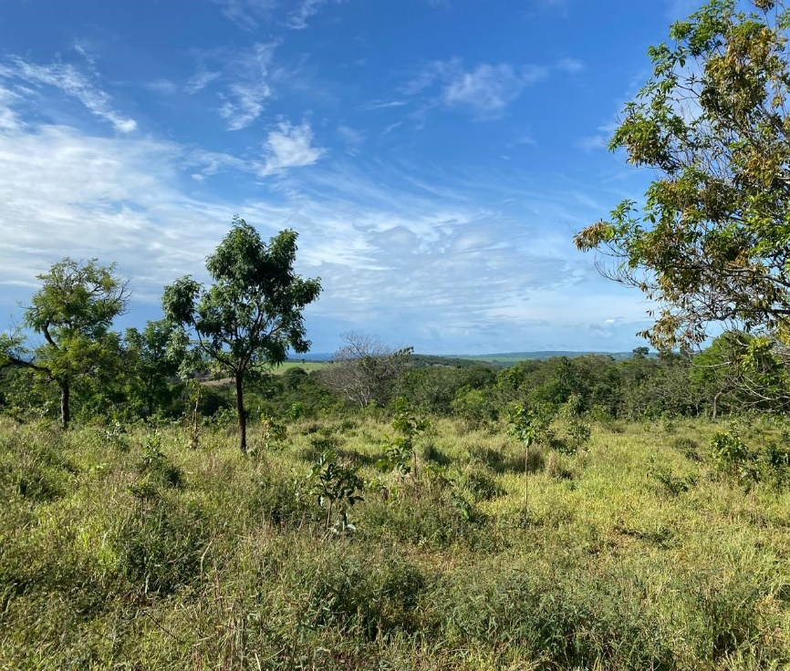
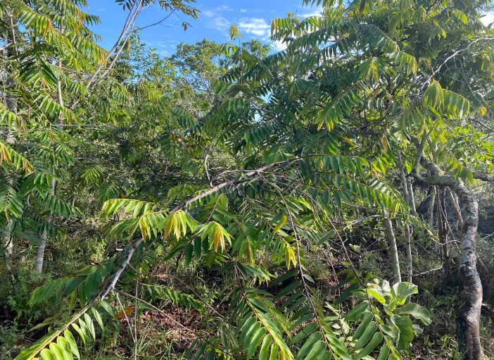
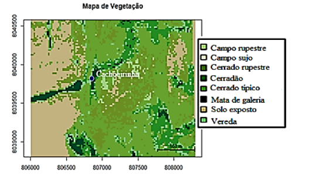

Cachoeirinha
A Trilha da Cachoeirinha está situada a cerca de 8 km do centro urbano de Ipameri–GO e representa um atrativo natural bastante procurado por moradores e visitantes da região. O percurso possui aproximadamente 0,3 km de extensão. A trilha se enquadra na categoria de dificuldade média, sendo ideal para atividades ao ar livre, ecoturismo e lazer contemplativo.
O acesso ao ponto de início da trilha se dá por uma estrada vicinal, com estacionamento improvisado às margens da via. A partir desse ponto, o percurso é realizado a pé ou por ciclistas, atravessando áreas de vegetação nativa.
Atenção e Recomendações
- O poço da cachoeira apresenta dimensões reduzidas, não sendo adequado para banho; entretanto, o trajeto constitui excelente oportunidade para observação da paisagem, da vegetação e dos elementos naturais do Cerrado.
- O percurso permite a condução de grupos de até 35 alunos, desde que acompanhados por responsáveis, favorecendo práticas de educação ambiental em campo.
- Para a realização da atividade, recomenda-se o uso de roupas leves e confortáveis, calçados fechados, aplicação de protetor solar e repelente, além da adoção de atitudes responsáveis quanto ao recolhimento de resíduos, contribuindo para a conservação do espaço natural.
A Tabela 1 contém dados sobre as distâncias do percurso completo (aproximadamente 7 km – com saída a partir do Trevo para Campo Alegre de Goiás), de acordo com cada via.
| Tipo de via | Distância |
|---|---|
| Rodovia GO-213 – pavimentada | 1,89 Km |
| Estrada Vicinal - sem pavimentação | 4,78 Km |
| Caminhada | 0,3 Km |
A Figura 1 mostra uma imagem de satélite da região e do trajeto completo da Trilha da Cachoeirinha.

Durante o trajeto, é possível observar áreas laterais utilizadas para pastagem, indicando o uso misto da terra e a pressão antrópica sobre a vegetação nativa.


Figuras 2 e 3. Uso misto da terra: Pastagem x Cerado Típico (dezembro de 2024).
A principal motivação dos visitantes está relacionada à beleza cênica da trilha, à deslumbrante cachoeira e ao seu uso recreativo, sendo considerada um atrativo de lazer e contato com a natureza. A presença de formações rochosas, cursos d’água e vegetação típica do Cerrado compõem um cenário natural de grande valor ecológico e paisagístico.

O bioma Cerrado, característico da região, manifesta-se na Trilha da Cachoeirinha por meio de diferentes fitofisionomias. Para fins de análise, foram utilizados dados de sensoriamento remoto referentes aos anos de 2016 e 2024, conforme demonstrado na Tabela 2 a seguir:
| Ano | Campo rupestre | Campo sujo | Cerrado rupestre | Cerradão | Cerrado típico | Mata de galeria | Solo exposto | Vereda |
|---|---|---|---|---|---|---|---|---|
| 2016 | 0,08% | 0,19% | 33,06% | 10,22% | 36,02% | 3,07% | 14,15% | 3,16% |
| 2024 | 1,25% | 0,20% | 16,19% | 11,15% | 37,75% | 3,82% | 24,32% | 5,27% |
A tabela mostra que o Cerrado típico é a principal vegetação da região em ambos os anos analisados, com uma leve expansão percentual ao longo do período.
As imagens abaixo representam os principais tipos de vegetação identificados como predominantes na Trilha da Cachoeirinha, conforme o levantamento dos anos analisados.


A figura 7 apresenta o mapa de cobertura vegetal da área referente à Trilha da Cachoeirinha, para 2024.

Interpretação das Mudanças na Vegetação (2016–2024)
A partir dos dados comparativos, nota-se que a formação mais estável é o Cerrado típico, com valores acima de 36% nos dois períodos, demonstrando relativa resiliência ecológica. Esse tipo de vegetação, caracterizado por árvores tortuosas, arbustos e gramíneas, é amplamente difundido no bioma Cerrado e se manteve predominante na trilha ao longo da década.
O Cerrado rupestre, no entanto, apresentou uma redução expressiva, passando de 33,06% em 2016 para 16,19% em 2024. Essa mudança pode ser parcialmente explicada por falhas no modelo de classificação aplicado ao sensoriamento remoto, principalmente em áreas com solo pedregoso e vegetação mais rala, o que dificulta a detecção precisa.
O Solo exposto, por sua vez, aumentou de forma significativa (de 14,15% para 24,32%), o que pode ser interpretado como um alerta para processos erosivos ou aumento da interferência humana na área.
A Mata de galeria manteve-se estável (3,07% em 2016 e 3,82% em 2024), o que reforça a conservação dos corredores ecológicos associados a cursos d’água. As formações campestres (Campo rupestre e Campo sujo), embora estejam presentes em baixa proporção, também variaram pouco ao longo do período, o que indica estabilidade.
A Trilha da Cachoeirinha apresenta um panorama de relativa estabilidade nas formações vegetais predominantes, especialmente o Cerrado típico. No entanto, o aumento do Solo exposto indica a necessidade de monitoramento contínuo da área para evitar processos de degradação. A presença de pastagens próximas e o uso múltiplo do solo podem interferir negativamente na conservação do bioma.
As mudanças identificadas entre 2016 e 2024 também refletem a dinâmica ecológica natural da vegetação do Cerrado, sujeita a fatores como clima, regeneração e ações humanas indiretas. O uso de dados geoespaciais, aliado à observação em campo, permite um diagnóstico mais preciso e contribui para a gestão sustentável dos atrativos naturais.